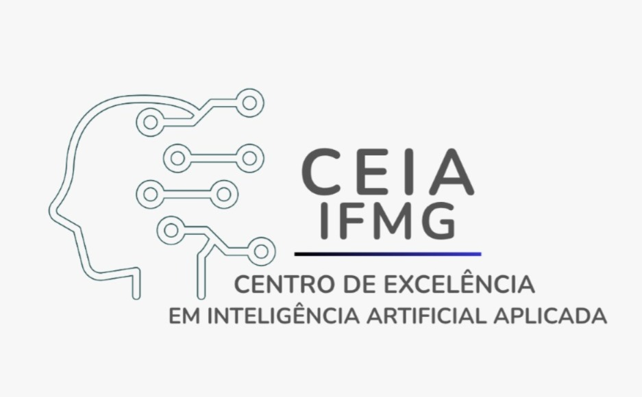
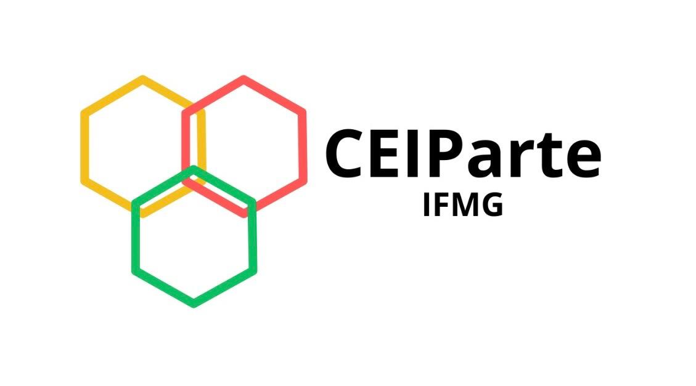
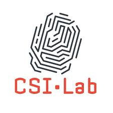
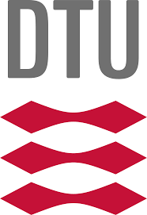
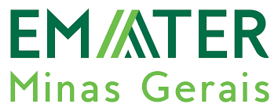
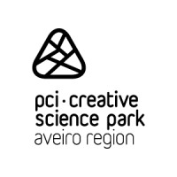

Parque Tecnológico
Interiorizado
Impacto dos Institutos Federais no
Desenvolvimento Regional
- ENREDE - Maio de 2026
 Profa. Dra. Gislayne
Elisana Gonçalves
Profa. Dra. Gislayne
Elisana GonçalvesPró-Reitora de Inovação, Pesquisa e Pós-Graduação do IFMG
Parque Tecnológico
Territórios de Minas
Aproveita a infraestrutura e as competências já existentes nos diversos campi do IFMG para democratizar o acesso à inovação em Minas Gerais por meio da implantação das Unidades Tecnológicas nos territórios.
Uma Visão
"Ser referência como instituição de educação profissional, científica e tecnológica, inovadora, sustentável, socialmente inclusiva e articulada com as demandas da sociedade."


Impacto da
Interiorização


Objetivos Estratégicos do Parque Tecnológico
Fomentar a Inovação
Pesquisa aplicada e transferência de tecnologia.
Qualificação Profissional
Programas de capacitação alinhados ao mercado.
Apoiar Startups
Estrutura de incubação e aceleração de negócios.
Academia–Indústria
Desenvolvimento conjunto de projetos tecnológicos.
Estrutura
Organizacional
-
Reitoria
-
PRIPPG Pró-reitoria de Inovação,
Pesquisa e Pós-graduação-
-
Unidades
Tecnológicas
-
-
 NIT / Agência de Inovação
NIT / Agência de Inovação
-
Centros de
Excelência

-
Núcleo de
PI e TT -
Prospecção e
Parcerias -
Empreende-
dorismo -
Convênios e
Contratos
-
-
-
Polo de Inovação
-
Parceiros do Parque Tecnológico








ENREDE MG 2026 · Juiz de Fora · 27 e 28 de maio
"Novas Unidades de Tecnologia estão a caminho, em processo de fechamento da Aliança Estratégica, nos municípios de Congonhas, Brumadinho, Mariana… que venham muitas outras!"